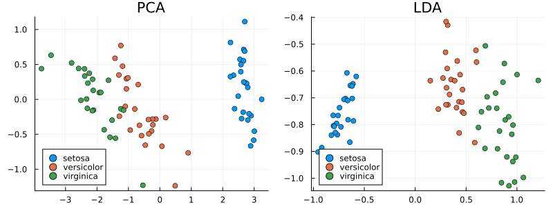

Linear Discriminant Analysis
Linear Discriminant Analysis (LDA) are statistical analysis methods to find a linear combination of features for separating observations in two classes.
- Note: Please refer to
MulticlassLDAfor methods that can discriminate between multiple classes.
Suppose the samples in the positive and negative classes respectively with means: $\boldsymbol{\mu}_p$ and $\boldsymbol{\mu}_n$, and covariances $\mathbf{C}_p$ and $\mathbf{C}_n$. Then based on Fisher's Linear Discriminant Criteria, the optimal projection direction can be expressed as:
\[\mathbf{w} = \alpha \cdot (\mathbf{C}_p + \mathbf{C}_n)^{-1} (\boldsymbol{\mu}_p - \boldsymbol{\mu}_n)\]
Here $\alpha$ is an arbitrary non-negative coefficient.
Example
Let's compare LDA and PCA 2D projection of Iris dataset. Principal Component Analysis identifies the directions that explain the most variance in the data.
using MultivariateStats, RDatasets
iris = dataset("datasets", "iris")
X = Matrix(iris[1:2:end,1:4])'
X_labels = Vector(iris[1:2:end,5])
pca = fit(PCA, X; maxoutdim=2)
Ypca = predict(pca, X)In contrast, Linear Discriminant Analysis attempts to identify the attributes that account for the most variance between classes. Therefore, with LDA, you must use known class labels.
lda = fit(MulticlassLDA, X, X_labels; outdim=2)
Ylda = predict(lda, X)
p = plot(layout=(1,2), size=(800,300))
for s in ["setosa", "versicolor", "virginica"]
points = Ypca[:,X_labels.==s]
scatter!(p[1], points[1,:],points[2,:], label=s, legend=:bottomleft)
points = Ylda[:,X_labels.==s]
scatter!(p[2], points[1,:],points[2,:], label=s, legend=:bottomleft)
end
plot!(p[1], title="PCA")
plot!(p[2], title="LDA")
Two-class Linear Discriminant Analysis
This package uses the LinearDiscriminant type to capture a linear discriminant functional:
MultivariateStats.LinearDiscriminant — Type
A linear discriminant functional can be written as
\[ f(\mathbf{x}) = \mathbf{w}^T \mathbf{x} + b\]
Here, $\mathbf{w}$ is the coefficient vector, and $b$ is the bias constant.
This type comes with several methods where $f$ be an instance of LinearDiscriminant.
StatsAPI.fit — Method
fit(LinearDiscriminant, Xp, Xn; covestimator = SimpleCovariance())Performs LDA given both positive and negative samples. The function accepts following parameters:
Parameters
Xp: The sample matrix of the positive class.Xn: The sample matrix of the negative class.
Keyword arguments:
covestimator: Custom covariance estimator for between-class covariance. The covariance matrix will be calculated ascov(covestimator_between, #=data=#; dims=2, mean=zeros(#=...=#). Custom covariance estimators, available in other packages, may result in more robust discriminants for data with more features than observations.
MultivariateStats.evaluate — Method
evaluate(f, x::AbstractVector)Evaluate the linear discriminant value, i.e $\mathbf{w}'x + b$, it returns a real value.
MultivariateStats.evaluate — Method
evaluate(f, X::AbstractMatrix)Evaluate the linear discriminant value, i.e $\mathbf{w}'x + b$, for each sample in columns of X. The function returns a vector of length size(X, 2).
StatsAPI.predict — Method
predict(f, x::AbstractVector)Make prediction for the vector x. It returns true iff evaluate(f, x) is positive.
StatsAPI.predict — Method
predict(f, X::AbstractMatrix)Make predictions for the matrix X.
StatsAPI.coef — Method
coef(f::LinearDiscriminant)Return the coefficients of the linear discriminant model.
StatsAPI.coefnames — Method
coefnames(f::LinearDiscriminant)Return the coefficients' names of the linear discriminant model.
StatsAPI.dof — Method
dof(f::LinearDiscriminant)Return the number of degrees of freedom in the linear discriminant model.
StatsAPI.weights — Method
weights(f::LinearDiscriminant)Return the linear discriminant model coefficient vector.
Base.length — Method
length(f::LinearDiscriminant)Get the length of the coefficient vector.
Additional functionality:
MultivariateStats.ldacov — Function
ldacov(C, μp, μn)Performs LDA given a covariance matrix C and both mean vectors μp & μn. Returns a linear discriminant functional of type LinearDiscriminant.
Parameters
C: The pooled covariance matrix (i.e $(\mathbf{C}_p + \mathbf{C}_n)/2$)μp: The mean vector of the positive class.μn: The mean vector of the negative class.
ldacov(Cp, Cn, μp, μn)Performs LDA given covariances and mean vectors. Returns a linear discriminant functional of type LinearDiscriminant.
Parameters
Cp: The covariance matrix of the positive class.Cn: The covariance matrix of the negative class.μp: The mean vector of the positive class.μn: The mean vector of the negative class.
Note: The coefficient vector is scaled such that $\mathbf{w}'\boldsymbol{μ}_p + b = 1$ and $\mathbf{w}'\boldsymbol{μ}_n + b = -1$.
Multi-class Linear Discriminant Analysis
Multi-class LDA is a generalization of standard two-class LDA that can handle arbitrary number of classes.
Overview
Multi-class LDA is based on the analysis of two scatter matrices: within-class scatter matrix and between-class scatter matrix.
Given a set of samples $\mathbf{x}_1, \ldots, \mathbf{x}_n$, and their class labels $y_1, \ldots, y_n$:
- The within-class scatter matrix is defined as:
\[\mathbf{S}_w = \sum_{i=1}^n (\mathbf{x}_i - \boldsymbol{\mu}_{y_i}) (\mathbf{x}_i - \boldsymbol{\mu}_{y_i})^T\]
Here, $\boldsymbol{\mu}_k$ is the sample mean of the $k$-th class.
- The between-class scatter matrix is defined as:
\[\mathbf{S}_b = \sum_{k=1}^m n_k (\boldsymbol{\mu}_k - \boldsymbol{\mu}) (\boldsymbol{\mu}_k - \boldsymbol{\mu})^T\]
Here, $m$ is the number of classes, $\boldsymbol{\mu}$ is the overall sample mean, and $n_k$ is the number of samples in the $k$-th class.
Then, multi-class LDA can be formulated as an optimization problem to find a set of linear combinations (with coefficients $\mathbf{w}$) that maximizes the ratio of the between-class scattering to the within-class scattering, as
\[\hat{\mathbf{w}} = \mathop{\mathrm{argmax}}_{\mathbf{w}} \frac{\mathbf{w}^T \mathbf{S}_b \mathbf{w}}{\mathbf{w}^T \mathbf{S}_w \mathbf{w}}\]
The solution is given by the following generalized eigenvalue problem:
\[\mathbf{S}_b \mathbf{w} = \lambda \mathbf{S}_w \mathbf{w}\]
Generally, at most $m - 1$ generalized eigenvectors are useful to discriminate between $m$ classes.
When the dimensionality is high, it may not be feasible to construct the scatter matrices explicitly. In such cases, see SubspaceLDA below.
Normalization by number of observations
An alternative definition of the within- and between-class scatter matrices normalizes for the number of observations in each group:
\[\mathbf{S}_w^* = n \sum_{k=1}^m \frac{1}{n_k} \sum_{i \mid y_i=k} (\mathbf{x}_i - \boldsymbol{\mu}_{k}) (\mathbf{x}_i - \boldsymbol{\mu}_{k})^T\]
\[\mathbf{S}_b^* = n \sum_{k=1}^m (\boldsymbol{\mu}_k - \boldsymbol{\mu}^*) (\boldsymbol{\mu}_k - \boldsymbol{\mu}^*)^T\]
where
\[\boldsymbol{\mu}^* = \frac{1}{k} \sum_{k=1}^m \boldsymbol{\mu}_k.\]
This definition can sometimes be more useful when looking for directions which discriminate among clusters containing widely-varying numbers of observations.
Multi-class LDA
The package defines a MulticlassLDA type to represent a multi-class LDA model, as:
MultivariateStats.MulticlassLDA — Type
A multi-class linear discriminant model type has following fields:
projis the projection matrixpmeansis the projected means of all classesstatsis an instance ofMulticlassLDAStatstype that captures all statistics computed to train the model (which we will discuss later).
MultivariateStats.MulticlassLDAStats — Type
Resulting statistics of the multi-class LDA evaluation.
Several methods are provided to access properties of the LDA model. Let M be an instance of MulticlassLDA:
StatsAPI.fit — Method
fit(MulticlassLDA, X, y; ...)Perform multi-class LDA over a given data set X with corresponding labels y with nc number of classes.
This function returns the resultant multi-class LDA model as an instance of MulticlassLDA.
Parameters
X: the matrix of input samples, of size(d, n). Each column inXis an observation.y: the vector of class labels, of lengthn.
Keyword arguments
method: The choice of methods::gevd: based on generalized eigenvalue decomposition (default).:whiten: first derive a whitening transform fromSwand then solve the problem based on eigenvalue
Sb.outdim: The output dimension, i.e. dimension of the transformed spacemin(d, nc-1)regcoef: The regularization coefficient (default:1.0e-6). A positive valueregcoef * eigmax(Sw)is added to the diagonal ofSwto improve numerical stability.covestimator_between: Custom covariance estimator for between-class covariance (default:SimpleCovariance()). The covariance matrix will be calculated ascov(covestimator_between, #=data=#; dims=2, mean=zeros(#=...=#)). Custom covariance estimators, available in other packages, may result in more robust discriminants for data with more features than observations.covestimator_within: Custom covariance estimator for within-class covariance (default:SimpleCovariance()). The covariance matrix will be calculated ascov(covestimator_within, #=data=#; dims=2, mean=zeros(nc)). Custom covariance estimators, available in other packages, may result in more robust discriminants for data with more features than observations.
Notes:
The resultant projection matrix $P$ satisfies:
\[\mathbf{P}^T (\mathbf{S}_w + \kappa \mathbf{I}) \mathbf{P} = \mathbf{I}\]
Here, $\kappa$ equals regcoef * eigmax(Sw). The columns of $\mathbf{P}$ are arranged in descending order of the corresponding generalized eigenvalues.
Note that MulticlassLDA does not currently support the normalized version using $\mathbf{S}_w^*$ and $\mathbf{S}_b^*$ (see SubspaceLDA).
StatsAPI.predict — Method
predict(M::MulticlassLDA, x)Transform input sample(s) in x to the output space of MC-LDA model M. Here, x can be either a sample vector or a matrix comprised of samples in columns.
Statistics.mean — Method
mean(M::MulticlassLDA)Get the overall sample mean vector (of length $d$).
Base.length — Method
length(M::MulticlassLDA)Get the sample dimensions.
MultivariateStats.classmeans — Method
classmeans(M)Get the matrix comprised of class-specific means as columns (of size $d × m$).
MultivariateStats.classweights — Method
classweights(M)Get the weights of individual classes (a vector of length $m$). If the samples are not weighted, the weight equals the number of samples of each class.
MultivariateStats.withclass_scatter — Method
withinclass_scatter(M)Get the within-class scatter matrix (of size $d × d$).
MultivariateStats.betweenclass_scatter — Method
betweenclass_scatter(M)Get the between-class scatter matrix (of size $d × d$).
MultivariateStats.projection — Method
projection(M::MulticlassLDA)Get the projection matrix (of size $d × p$).
Subspace Linear Discriminant Analysis
The package also defines a SubspaceLDA type to represent a multi-class LDA model for high-dimensional spaces. MulticlassLDA, because it stores the scatter matrices, is not well-suited for high-dimensional data. For example, if you are performing LDA on images, and each image has $10^6$ pixels, then the scatter matrices would contain $10^12$ elements, far too many to store directly. SubspaceLDA calculates the projection direction without the intermediary of the scatter matrices, by focusing on the subspace that lies within the span of the within-class scatter. This also serves to regularize the computation.
SubspaceLDA supports all the same methods as MulticlassLDA, with the exception of the functions that return a scatter matrix. The overall projection is represented as a factorization $P*L$, where $P'*x$ projects data points to the subspace spanned by the within-class scatter, and $L$ is the LDA projection in the subspace. The projection directions $w$ (the columns of $projection(M)$) satisfy the equation
\[ \mathbf{P}^T \mathbf{S}_b \mathbf{w} = \lambda \mathbf{P}^T \mathbf{S}_w \mathbf{w}.\]
When $P$ is of full rank (e.g., if there are more data points than dimensions), then this equation guarantees that $\mathbf{S}_b \mathbf{w} = \lambda \mathbf{S}_w \mathbf{w}$ will also hold.
The package defines a SubspaceLDA type to represent a multi-class LDA model, as:
MultivariateStats.SubspaceLDA — Type
Subspace LDA model type has following fields:
projw: the projection matrix of the subspace spanned by the between-class scatterprojLDA: the projection matrix of the subspace spanned by the within-class scatterλ: the projection eigenvaluescmeans: the class centroidscweights: the class weights
Several methods are provided to access properties of the LDA model. Let M be an instance of SubspaceLDA:
StatsAPI.fit — Method
fit(SubspaceLDA, X, y; normalize=true)Fit an subspace projection of LDA model over a given data set X with corresponding labels y using the equivalent of $\mathbf{S}_w^*$ and $\mathbf{S}_b^*$`.
Note: Subspace LDA also supports the normalized version of LDA via the normalize keyword.
StatsAPI.predict — Method
predict(M::SubspaceLDA, x)Transform input sample(s) in x to the output space of LDA model M. Here, x can be either a sample vector or a matrix comprised of samples in columns.
Statistics.mean — Method
mean(M::SubspaceLDA)Returns the mean vector of the subspace LDA model M.
MultivariateStats.projection — Method
projection(M)Get the projection matrix.
Base.length — Method
length(M)Get dimension of the LDA model.
LinearAlgebra.eigvals — Method
eigvals(M::SubspaceLDA)Get the eigenvalues of the subspace LDA model M.